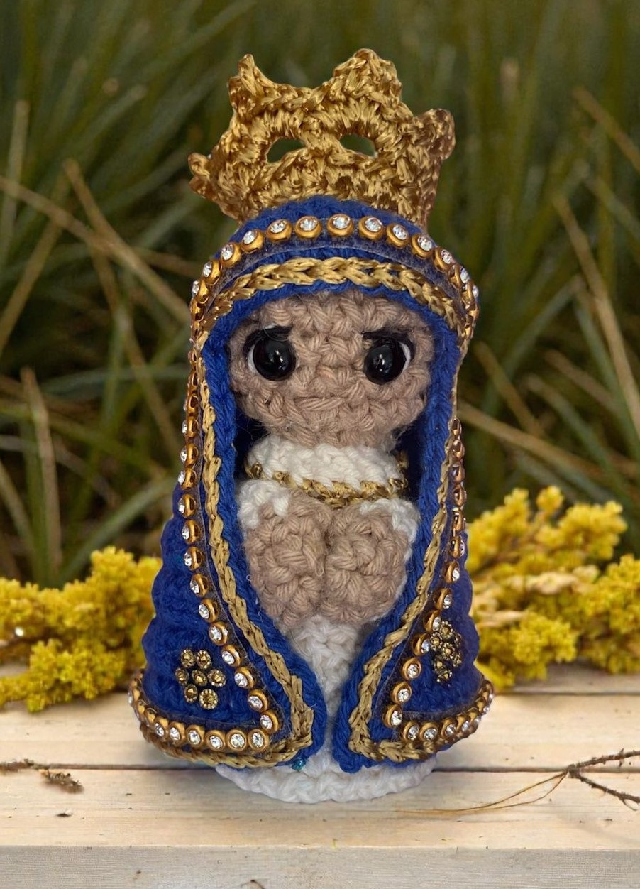

Receita de Mini Aparecida de Amigurumi Passo a Passo

Materiais
- Fio cor off white
- Fio cor azul royal
- Fio cor nude
- Linha encanto slim
- Agulha 2,5mm
- Agulha tapeçaria
- Olho meia pérola 6mm
- Tesoura
- Enchimento fibra de poliester
- Cola silicone
Corpo
- 1ª carr: AM (Anel Mágico) com 6 pb
- 2ª carr: 1 aum em cada pt (12 pt)
- 3ª carr: (1 pb, 1 aum) x6 (18 pt)
- 4ª carr: (2 pb, 1 aum) x6 (24 pt)
- 5ª carr: 24 pb em BLO (1 carr sem aum)
- 6ª e 7ª carr: 24 pb (2 carr sem aum)
- 8ª carr: (2 pb, 1 dim) x6 (18 pt)
- 9ª a 11ª carr: 18 pb (3 carr sem dim)
- 12ª carr: (1 pb, 1 dim) x6 (12 pt)
- 13ª e 14ª carr: 12 pb (2 carr sem diminuição)
- 15ª carr: 6 dim (6 pt)
- Troca de cor
- 16ª carr: 6 aum (12 pt)
- 17ª carr: (2 pb, 1 aum) x4 (24 pt)
- 18ª a 20ª carr: 24 pb (3 carr sem aum)
- 21ª carr: (2 pb, 1 dim) x6 (18 pt)
- 22ª carr: (1 pb, 1 dim) x6 (12 pt)
- 23ª carr: 6 aum (12 pt)
Coroa
- 1ª carr: 18 correntes
- 2ª carr: 18 pb
- 3ª carr: [1 pb, 3 corrent (pula 2 pb), 1 pb] x 6
- 4ª carr: [2 pb, 1 ponto picô, 2 pb] x 6
Manto
- 1ª carr: 6 pb dentro do AM
- 2ª carr: 6 aum (12 pt)
- 3ª carr: (1 pb, 1 aum) x6 (18 pt)
- 4ª carr: (2 pb, 1 aum) x6 (24 pt)
- 5ª e 6ª carr: 24 pb (2 carr sem aum)
- 7ª carr: 10 pb, 1 corr e vire
- 8ª carr: 1 aum, 8 pb, 2 aum, 3 pb, 1 aum, 1 corr e vire (14pt)
- 9ª carr: 3 pb, 1 aum, 4 pb, 1 aum, 3 pb, 1 corr e vire (16pt)
- 10ª carr: 1 aum, 14 pb, 1 aum, 1 corr e vire (18 pt)
- 11ª carr: 4 pb, 1 aum, 6 pb, 1 aum, 4 pb, 1 corr e vire (20 pt)
- 12ª carr: 1 aum, 18 pb, 1 aum, 1 corr e vire (22 pt)
- 13ª carr: 5 pb, 1 aum, 8 pb, 1 aum, 5 pb, 1 corr e vire (24 pt)
- 14ª carr: 1 aum, 22 pb, 1 aum, 1 corr e vire (26 pt)
- 15ª carr: 6 pb, 1 aum, 10 pb, 1 aum, 6 pb, 1 corr e vire (28 pt)
- 16ª carr: 1 aum, 26 pb, 1 aum, 1 corr e vire (30 pt)
- 17ª carr: 7 pb, 1 aum, 12 pb, 1 aum, 7 pb, 1 corr e vire (32 pt)
- 18ª carr: 1 aum, 30 pb, 1 aum, 1 corr e vire (34 pt)
- 19ª carr: 8 pb, 1 aum, 14 pb, 1 aum, 8 pb, 1 corr e vire (36 pt)
- 20ª carr: Passar pb ao redor de todo o manto
- 21ª carr: Passar o fio dourado em volta do manto para acabamento
Braços (2x)
- 1ª carr: AM com 6 pb
- 2ª carr: 6 pb
- Troca de cor
- 3ª a 8ª carr: 6 pb sem aum (6 carreiras)
- Fechar com pb e deixar fio longo para costura.